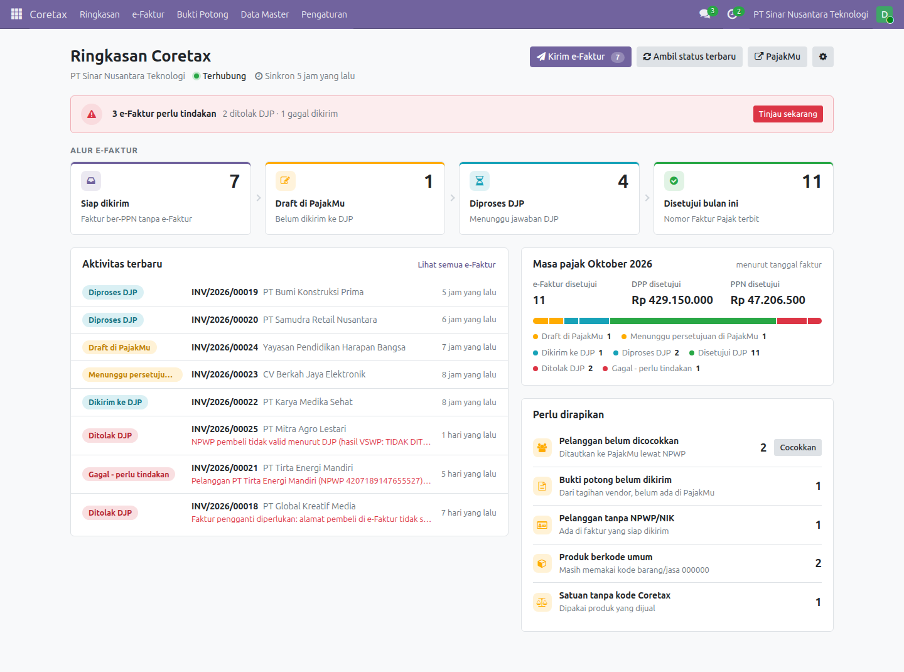
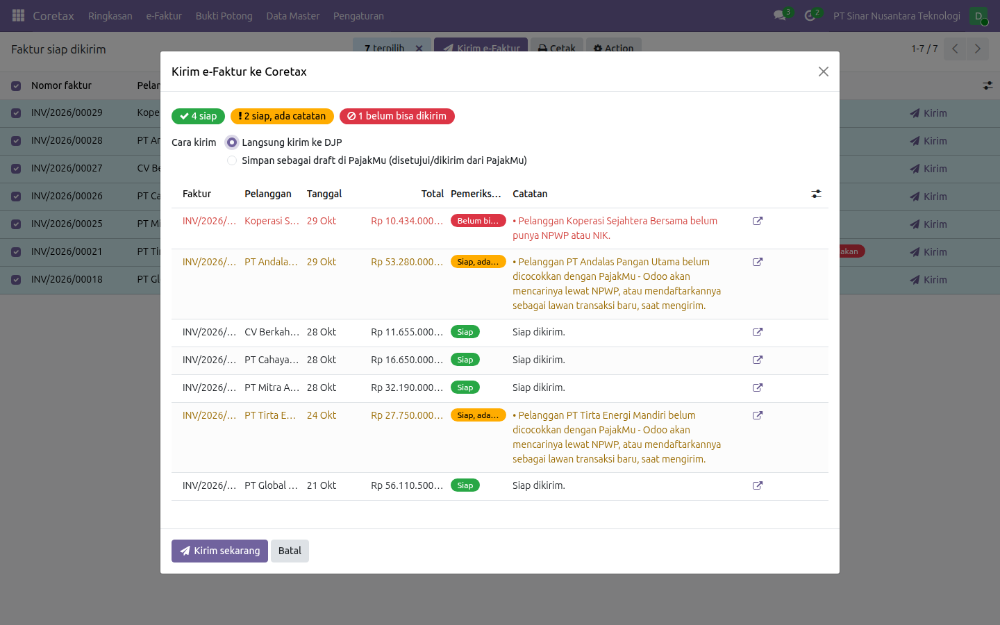
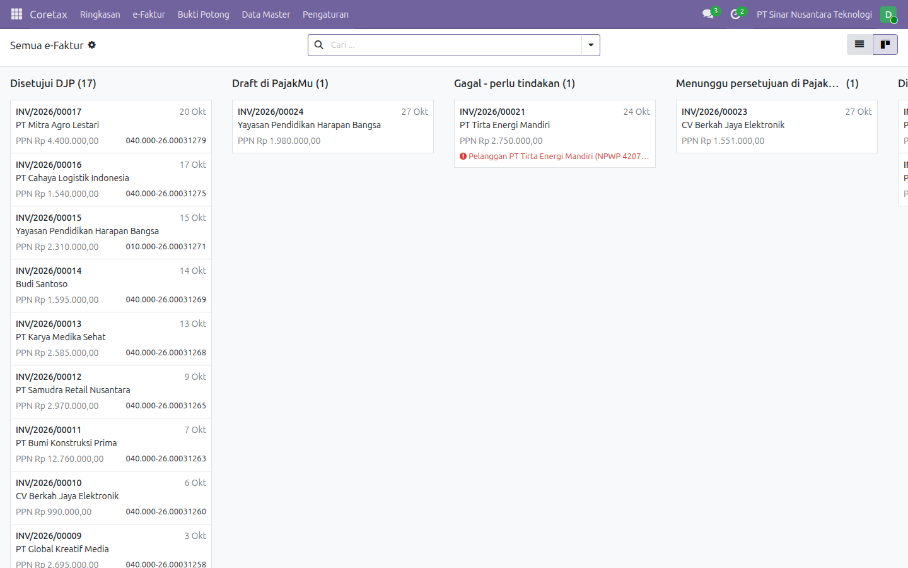
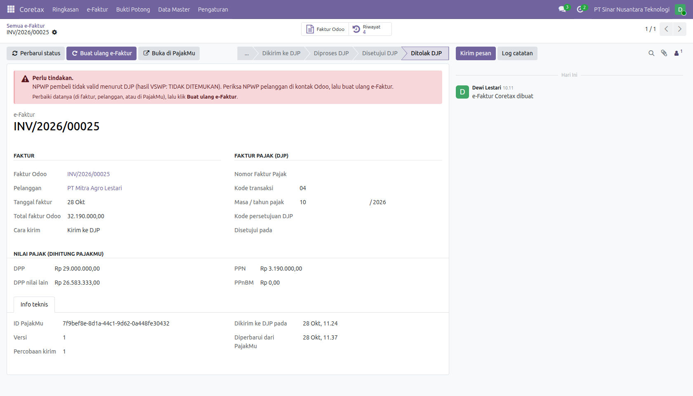
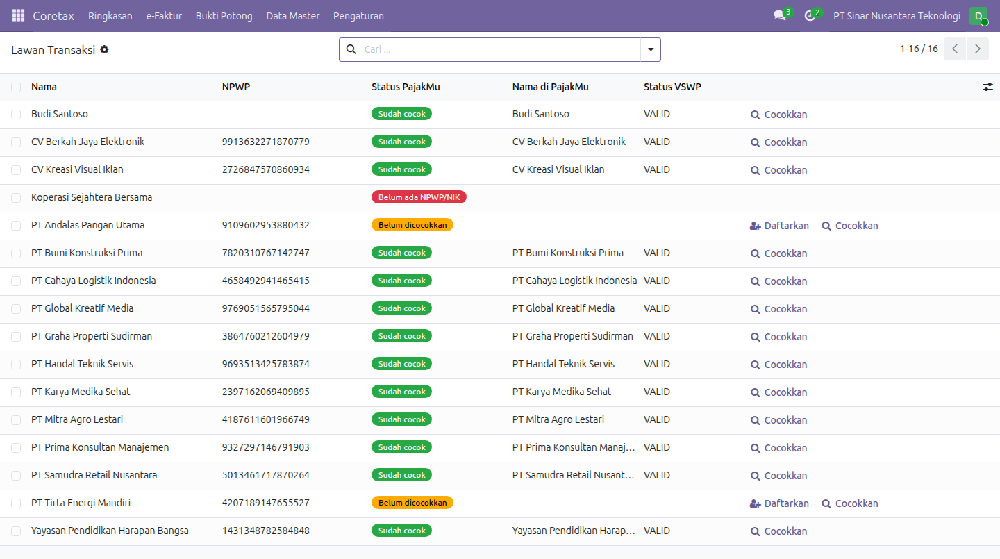
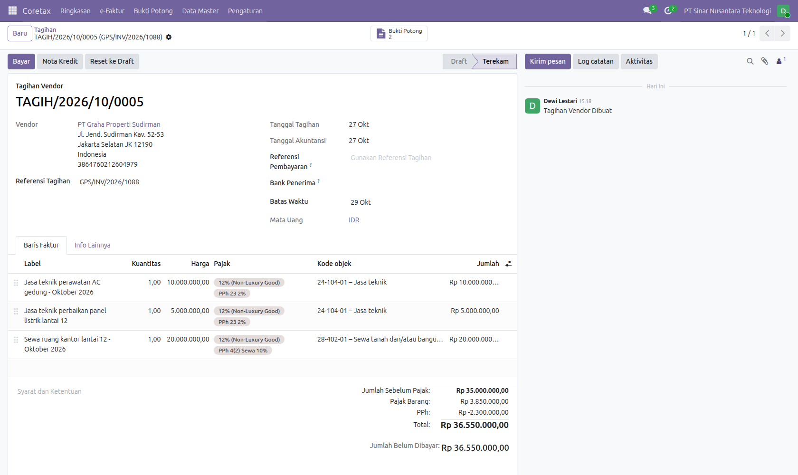
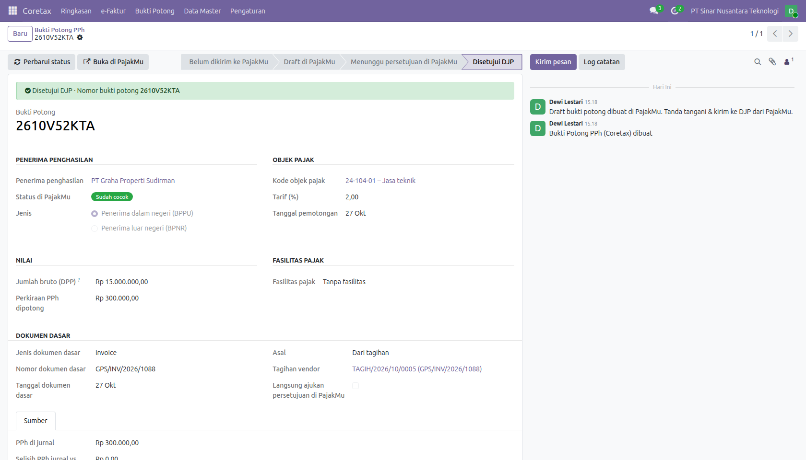
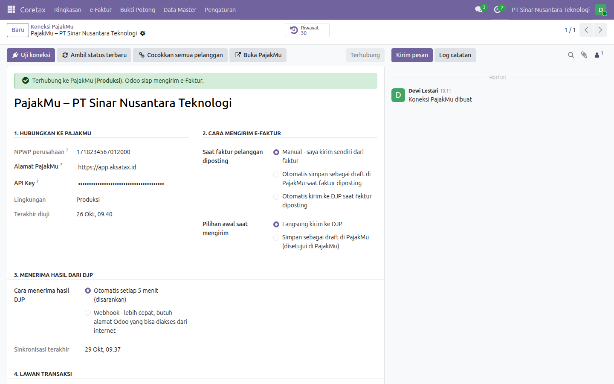

Coretax IntegrationModul Odoo dari Aksa
Modul Odoo 20 coretax_integration
Faktur pelanggan Odoo dikirim ke DJP melalui PajakMu. Status DJP, Nomor Faktur Pajak, dan kode persetujuan kembali ke Odoo secara otomatis, tanpa ekspor-impor file XML. PPh di tagihan vendor langsung menjadi bukti potong per kode objek.
WhatsApp PajakMu 0858-7571-6648
Faktur Pelanggan
INV/2026/00009
PT Global Kreatif Media
Contoh dengan data fiktif. Faktur berangkat dari Odoo, lalu status dan Nomor Faktur Pajak kembali ke faktur yang sama.
Jumlah faktur siap dikirim, sedang diproses, disetujui bulan ini, dan perlu tindakan, serta DPP dan PPN masa pajak berjalan.

Coretax › RingkasanData contoh fiktif.
Modul ini mengurus pengiriman, pemantauan status, dan tindak lanjutnya.
Kirim satu faktur atau puluhan sekaligus dengan satu klik. Tidak perlu lagi mengunduh XML lalu mengunggahnya ke Coretax.
NPWP/NIK, kode transaksi, kode barang/jasa, mata uang, dan tanggal diperiksa sebelum dikirim, dengan pesan yang mudah dipahami.
Odoo mengambil status terbaru setiap 5 menit, atau langsung lewat webhook bertanda tangan HMAC. Nomor Faktur Pajak tampil di faktur.
Baris e-Faktur disusun dengan penyusun data bawaan Odoo (l10n_id_efaktur_coretax), jadi angkanya sama dengan XML Coretax resmi. PPh di bukti potong sama dengan Utang PPh di jurnal.
Empat langkah, dan dua di antaranya terjadi di faktur yang sama.
Faktur ber-PPN diposting lalu diperiksa
e-Faktur dibuat, lalu langsung dikirim atau disetujui dulu di PajakMu
e-Faktur diproses lalu disetujui atau ditolak
Status, nomor faktur pajak, dan alasan penolakan tercatat di faktur
Empat layar yang paling sering dibuka tim keuangan.
Pemeriksaan sebelum kirim
Pilih banyak faktur sekaligus dari daftar Siap dikirim. Setiap faktur langsung diberi tanda Siap, Siap, ada catatan, atau Belum bisa dikirim beserta alasannya. Faktur yang belum lengkap tidak ikut terkirim.
Pilih cara kirim: langsung ke DJP, atau simpan sebagai draft untuk disetujui di PajakMu.

Wizard Kirim e-Faktur ke Coretax dengan hasil pemeriksaan tiap faktur
Status di faktur
Setelah DJP menyetujui, faktur Odoo menampilkan status dan Nomor Faktur Pajak. Setiap langkah, termasuk penolakan dan pengiriman ulang, tercatat di chatter faktur.
Faktur yang e-Faktur-nya sedang diproses atau sudah disetujui DJP tidak bisa dikembalikan ke draft atau dibatalkan begitu saja di Odoo.

Faktur Odoo dengan status e-Faktur disetujui DJP dan Nomor Faktur Pajak
Semua e-Faktur
Lihat dalam bentuk daftar atau kanban: disetujui DJP, draft di PajakMu, menunggu persetujuan, diproses DJP, sampai yang gagal. Filter per bulan, masa pajak, atau pelanggan.

Kanban e-Faktur yang dikelompokkan per status
Perlu tindakan
e-Faktur yang ditolak DJP atau gagal dikirim dikumpulkan di satu daftar, lengkap dengan alasannya. Penanggung jawab faktur juga mendapat aktivitas "Perbaiki e-Faktur" di Odoo.
Perbaiki datanya, lalu klik Buat ulang e-Faktur. Versi lama tetap tersimpan sebagai riwayat.

e-Faktur ditolak DJP dengan alasan penolakan dan tombol Buat ulang e-Faktur
Meminta alasan (minimal 5 karakter). Pembatalan ditahan selama e-Faktur masih punya nota retur aktif.
Proses batalDibatalkan
Membuka faktur untuk diedit. Saat dikirim lagi, Odoo mengirim faktur pengganti dengan NSFP asli, dan e-Faktur lama menjadi Diganti setelah yang baru disetujui. Dari Odoo, e-Faktur bisa diganti satu kali; penggantian kedua dilakukan di PajakMu/DJP.
Menyimpan PDF resmi sebagai satu lampiran di faktur, diperbarui setiap kali diunduh.
Dari nota kredit vendor yang sudah diposting, klik Kirim nota retur. Odoo mencari faktur masukannya di PajakMu lewat Nomor Faktur Pajak vendor, lalu menampilkan barang/jasa dari DJP beserta sisa yang masih bisa diretur. Nilai retur per barang/jasa terisi dari nota kredit dan masih bisa diubah. Retur atas faktur keluaran dibuat pembeli di Coretax.
Butuh faktur asal yang e-Faktur-nya sudah disetujui.
Butuh isian Nomor Faktur Pajak vendor (13/16/17 digit, tab Info Lainnya) di tagihan vendor asal.
Kontak dicocokkan dengan Lawan Transaksi PajakMu lewat NPWP: semua sekaligus, satu per satu, atau otomatis saat mengirim. Yang belum terdaftar bisa didaftarkan langsung dari Odoo.
Data berikut diambil dari field kontak standar, dan bisa diganti field kustom atau Studio:
NPWPNIKpasporNITKU/TKUalamatemail

Coretax › Data Master › Lawan Transaksi
Tiga langkah, berurutan, dan setiap rupiah bisa ditelusuri balik ke jurnal.
Pasang pajak PPh di baris tagihan vendor, misalnya PPh 23 2% untuk jasa teknik dan PPh 4(2) 10% untuk sewa ruang, di tagihan yang sama. Kode objek pajak terisi otomatis dari pajaknya dan bisa diganti per baris.
Utang PPh tercatat per kode objek, terpisah dari PPN, dan hutang usaha langsung netto.

Setiap kode objek di tagihan menjadi satu bukti potong, lengkap dengan penerima, DPP, tarif, dan dokumen dasar. Kirim ke PajakMu sebagai draft untuk ditandatangani di sana; nomor bukti potong dari DJP kembali ke Odoo.
Tagihan tanpa pajak PPh tetap bisa dibuatkan bukti potong lewat tombol Buat Bukti Potong.

Tab Sumber menunjukkan baris tagihan dan journal item Utang PPh di balik setiap bukti potong, beserta selisih antara PPh di jurnal dan perkiraan PPh DJP.
Nota kredit mengurangi DPP bukti potong yang belum dikirim. Tagihan yang bukti potongnya sudah di PajakMu tidak bisa direset, dibatalkan, atau dihapus, dan perubahan nilainya memicu aktivitas pembetulan.

Untuk perusahaan Indonesia, langsung tersedia setelah modul dipasang.
Setiap perusahaan di Odoo punya koneksi sendiri ke PajakMu.

Isi alamat PajakMu dan API key, lalu klik Uji koneksi. Tentukan apakah e-Faktur dikirim manual, disimpan sebagai draft, atau dikirim otomatis saat faktur diposting.

Semua komunikasi dengan PajakMu disimpan selama 90 hari, lengkap dengan ID Permintaan untuk tim dukungan PajakMu. API key tidak pernah ikut dicatat.
Coba ulang sekali saat PajakMu sibukIdempotency-Key di setiap pengirimanTidak ada dokumen ganda
Produk berkode umum 000000, satuan tanpa kode Coretax, dan pelanggan tanpa NPWP/NIK, yang bisa langsung diperbaiki dari daftarnya.
Pengguna Invoicing otomatis menjadi Pengguna Coretax, dan Administrator Akuntansi otomatis menjadi Administrator Coretax.
e-Faktur bisa dikirim dengan kode 07 dan 08 (keterangan tambahan dari tab Info Lainnya; 07: 1-31, 08: 1-10) dan kode 10. Kode 10 butuh PajakMu versi terbaru.
Tombol Perbarui di PajakMu di kontak, juga sebagai aksi daftar, memperbarui lawan transaksi yang sudah cocok di PajakMu.
Siapkan syaratnya dulu, lalu ikuti urutan langkahnya.
Modul ini mengikuti Public API PajakMu terbaru. Perbarui PajakMu lebih dulu, baru upgrade modul Odoo.
Pasang modul Coretax Integration (PajakMu).
Buka Coretax › Pengaturan › Koneksi PajakMu, isi alamat dan API key, lalu klik Uji koneksi.
Pilih cara kirim: manual dari faktur atau otomatis saat diposting. Webhook bersifat opsional.
Klik Cocokkan semua pelanggan.
Pasang Kode Barang/Jasa Coretax di produk.
Untuk PPh, pasang pajak PPh di baris tagihan vendor. Kode objek pajak terisi dari pajaknya.
Hal berikut belum dikerjakan dari Odoo, jadi dilakukan langsung di aplikasi PajakMu. Tombol Buka di PajakMu membuka dokumennya.
PPh dicatat saat tagihan vendor diposting. PPh yang baru dipotong saat pembayaran, PPh yang dipotong pelanggan, dan kurs pajak KMK untuk tagihan valas belum didukung.
Modul ini butuh akun PajakMu paket Business atau lebih tinggi. Chat tim PajakMu di WhatsApp untuk berlangganan atau bertanya.
Berlangganan via WhatsAppWhatsApp 0858-7571-6648
Screenshot di halaman ini memakai data contoh fiktif.
Coretax adalah sistem milik Direktorat Jenderal Pajak. Modul ini dan PajakMu tidak dibuat atau dikelola oleh DJP. Odoo adalah merek milik Odoo S.A.